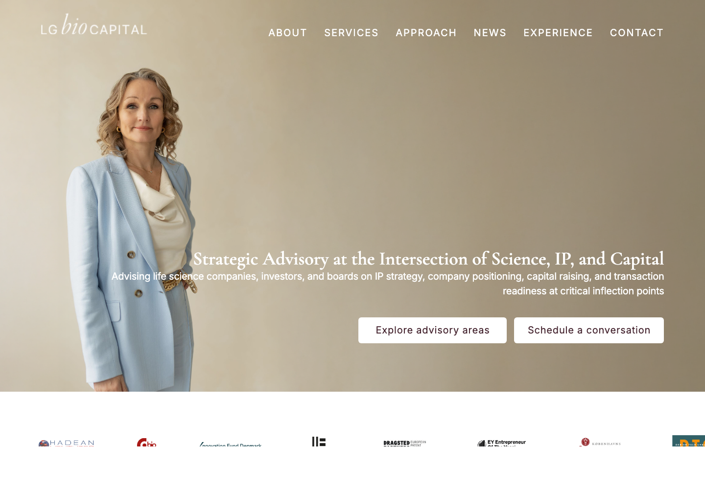
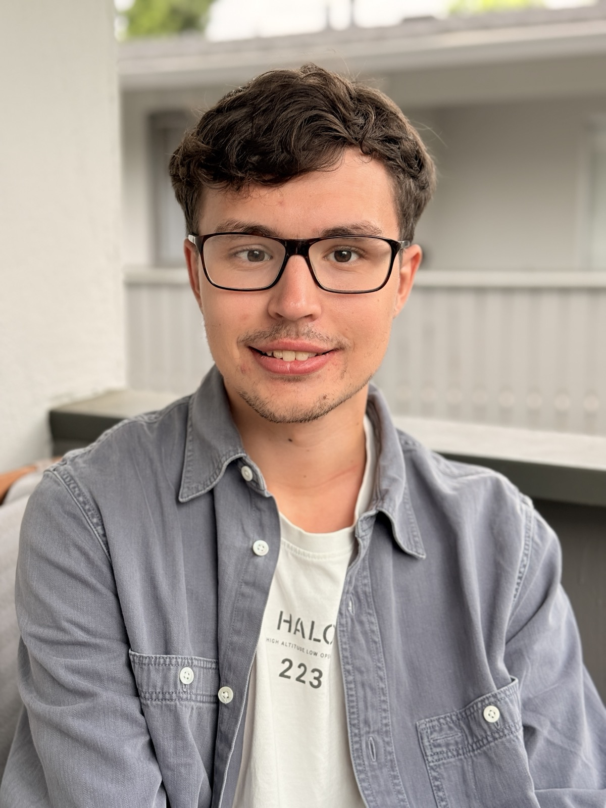
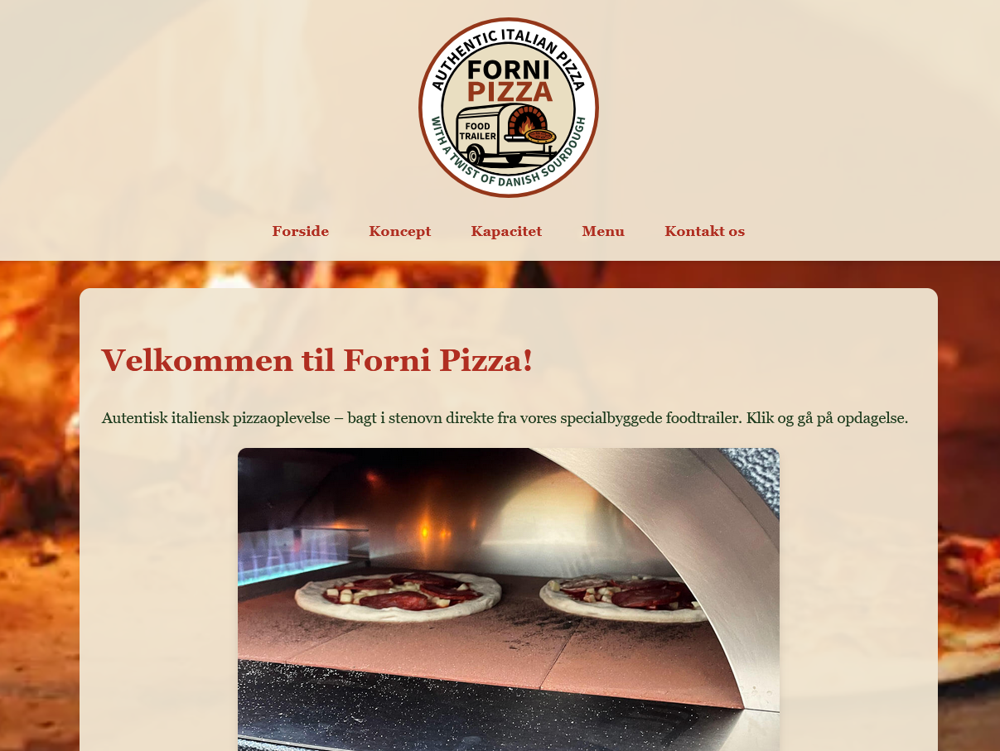
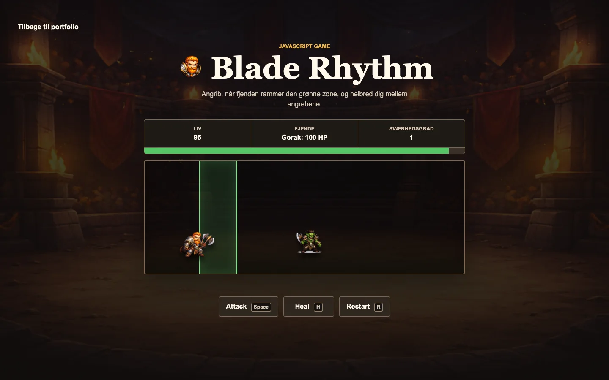
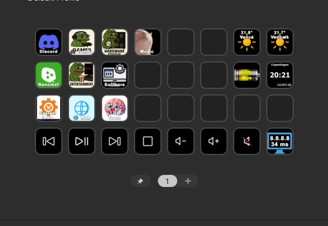
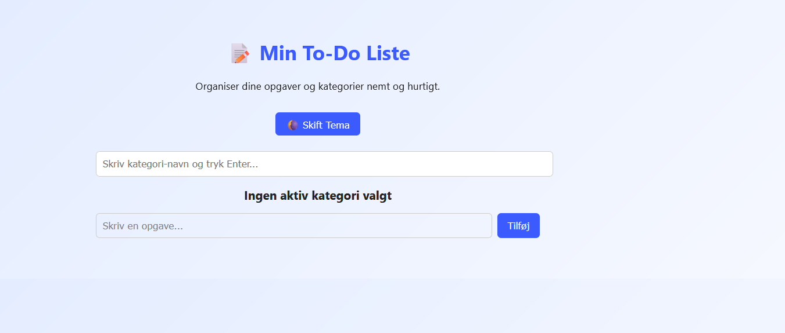

Client website
LG Bio Capital Partners
Et professionelt website for en rådgivningsvirksomhed inden for life science og investering. Opgaven handler om at gøre et komplekst område mere roligt, troværdigt og nemt at forstå.
Se projekt
Portfolio / Web / UX / Frontend
Jeg laver websites, hvor indholdet er nemt at forstå, layoutet er roligt, og teknikken ikke står i vejen. Min IT-supportbaggrund gør, at jeg tænker praktisk: hvad skal brugeren kunne, og hvordan får vi det til at virke ordentligt?


Jeg går efter løsninger, der føles tydelige, brugbare og nemme at forklare.
Udvalgte projekter
Her samler jeg de projekter, der bedst viser hvordan jeg tænker: først forstå opgaven, så gøre løsningen tydelig, og bagefter få detaljerne til at fungere.
Client website
Et professionelt website for en rådgivningsvirksomhed inden for life science og investering. Opgaven handler om at gøre et komplekst område mere roligt, troværdigt og nemt at forstå.
Se projekt
Website under udvikling
Et kommende website med fokus på professionel præsentation, klar informationsarkitektur og en visuel identitet, der kan vokse med projektet.
Under opbygningWebsite, brand structure og content architecture.
Client website
Et website til en pizza foodtrailer med fokus på menu, kontakt og en enkel præsentation, som fungerer godt på mobil.
Se projekt
JavaScript game
Et timing-baseret browsergame, hvor spilleren angriber, healer og møder hurtigere fjender, efterhånden som sværhedsgraden stiger.
Min rolle: Game logic og frontend
Spil Blade Rhythm
UI/UX case
Et personligt interface-redesign med fokus på bedre hierarki, mere rolig navigation og en tydeligere brugeroplevelse.
Læs case
Frontend exercise
En lille JavaScript webapp, hvor fokus er interaktion, lokal datalagring og et simpelt brugerflow.
Åbn webapp
Om mig
Hej, jeg hedder Martin. Jeg er 22 år og uddannet IT-supporter. Jeg bruger den tekniske baggrund til at forstå problemerne bag et website, ikke kun hvordan det ser ud på overfladen.
Lige nu bygger jeg portfolioen som støtte til job, praktik og projekter inden for web, UX og frontend. Senere vil jeg gerne bruge den samme base til at bevæge mig mere mod software engineering.
Jeg starter med at forstå behovet, rydder op i strukturen og bygger derefter en løsning, der er nem at bruge. Jeg kan godt lide når ting føles enkle, men stadig er teknisk ordentlige.
Jeg kan kombinere IT-support, fejlfinding, visuel sans og frontend. Det gør mig god til at bygge løsninger, hvor både brugeroplevelse og teknisk drift giver mening.
Skills
Jeg vil hellere vise hvad jeg arbejder med, end sætte tilfældige procenter på mig selv. Her er de områder, jeg bruger i projekter og gerne vil bygge videre på.
CV og materiale
Her ligger det materiale, der kan støtte mit CV, mine motiverede ansøgninger og samtaler om praktik, job eller projekter.
Download mit CV på dansk eller engelsk.
Læs min Stream Deck case som eksempel på analyse, redesign og brugerflow.
Dokumentation for min afsluttede IT-supporteruddannelse.
Kontakt
Jeg er åben for praktik, juniorroller og projekter, hvor jeg kan kombinere IT, design og webudvikling.